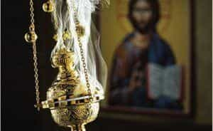

Eusebius is a Prairie Canadian who likes gun rights, traditional values, and economics.


I know what you’re thinking: “How can a man be celibate for the rest of his life?” I will gladly address that glaring concern, but first, hear me out.
The Church needs masculine leaders. Far too many priests are weak, cuckolded, beta men (and a few are child abusers). This is in stark contrast to the Church’s historical martyrs, like St. Jean de Brébeuf, who withstood harsh winters, month-long canoe trips, and gruelling torture, to spread the Gospel in Canada. Masculinity reflects Jesus Christ’s own human nature, as well as God the Father’s patriarchal attributes.
The question of celibacy is important: we men are wired to spread our seed. This issue can be addressed in two ways. First, after you have sowed your wild oats, and had your fill of hedonistic game, then you can join the priesthood; fornication does not yield lasting fulfillment, after all, and marriage is a rigged lottery. Indeed, the skills you learn by practicing game will be useful for the Church.
Second, consider joining an Eastern Catholic Church, which permits ordination after marriage – the downside of this is that you may need to be fluent in Ukrainian, Greek, Arabic, or some other language. In this article, however, I restrict my attention to the Church of Rome.

There are general requirements: you must be Roman Catholic, unmarried, and male. The Church often pays for your training, after which you attain a bachelor’s degree in theology or philosophy. Eventually, you are ordained a priest, taking solemn vows. This gives you the power, through Christ, to perform the sacraments: baptism, confirmation, reconciliation, marriage, and anointing the sick. After this, your Bishop or Superior may decide that you require further education, sending you to get a master’s degree or PhD.
You must decide whether to become a Diocesan priest, or to join a religious order. In the former case, you need only make vows of chastity and obedience – thus a Diocesan (secular) priest can own property and start a business. However, you are generally restricted to a single geographic area, making it difficult to move.
Religious orders, on the other hand, may require you to also pledge poverty, meaning you cannot own property, aside from simple personal items like a toothbrush. The upside is that you live in a community of likeminded men, and can travel or have other careers: teaching, research, medicine, etc. Each order has its own spirituality, and it is worth discerning this before you commit.
There are, perhaps, hundreds of religious orders to choose from. In what follows, I provide a summary of a few notable ones.
Founded in 1540 by former soldier St. Ignatius of Loyola, the Society of Jesus is the most popular Catholic order. In addition to vows of poverty, chastity, and obedience, Jesuits make a special vow of obedience to the Pope. Historically, the Jesuits were an important part of the Counter-Reformation and Vatican II.
The heart of the order is Ignatian spirituality, which requires you to “Find God in all things.” Ignatius, a military man, realized the importance of drills, and therefore composed a series of spiritual exercises for Jesuit men to follow. These exercises are performed in a 30-day silent retreat.
Jesuits have a reputation for liberal theology and politics, but there have been conservative Jesuits, like Cardinal Dulles. The order does not permit monasticism, since it requires Jesuits to be active in the community.
‘Franciscan’ is not an order as such, since it encompasses several orders, such as the Friars Minor, Saint Clare, etc. However, these orders all adhere to Franciscan spirituality.
St. Francis of Assisi, after whom this spirituality is named, was a medieval Italian friar who was a hippy, living in the wilderness, preaching to birds, and conversing with flowers. During the Fifth Crusade, he tried to convert a Muslim Sultan of Egypt, without success. Franciscans carry on St. Francis’s spirit, finding harmony in Nature, wearing a friar’s habit, and ministering to the community.
The Fraternalitas Sacerdotalis Sancti Petri (FSSP) is a traditionalist order, which grew from a rift between members of the Society of Saint Pius X. The order harkens to a pre-1964 Catholic Church, emphasizing the traditional Roman rite, in which all masses are said in Latin.
I have attended the ancient Tridentine Mass, and it is absolutely beautiful and sensuous, arresting your nose with incense, your ears with melodic Latin hymns, and your eyes with simple elegance. Needless to say, the men who work in this order are traditionalist and conservative in outlook. They are also fairly young, the average age being 37.
The Catholic Church is one of the few powerful institutions, in our modern world, that stand for Western values, and against degeneracy. It needs masculine leadership to ensure that it remains the rock upon which Jesus and St. Peter founded it. Prayerfully consider joining the priesthood, and improving the Church from within.
Read Next: Cardinal Raymond Leo Burke Rebukes Feminization Of Catholic Church